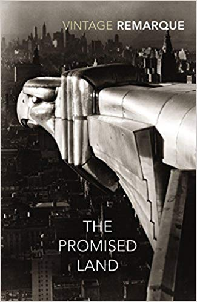

Erich Maria Remarque
Biography
Bibliography
Media
Bibliography (English Translations)
All Quiet on the Western Front (1929)
The Road Back (1931)
Three Comrades (1937)
Flotsam (1941)
Arch of Triumph (1945)
Spark of Life (1952)
A Time to Live and a Time to Die (1954)
The Black Obelisk (1957)
Heaven Has No Favorites (1961)
The Night in Lisbon (1964)

The Promised Land
Shadows in Paradise (1972)
Full Geman and English Bibliography
Im Westen nichts Neues, 1929 original version. (1920) Die Traumbude. Ein Künstlerroman; English translation: The Dream Room
(1928) Station am Horizont; English translation: Station at the Horizon
(1929) Im Westen nichts Neues; English translation: All Quiet on the Western Front (1929)
(1931) Der Weg zurück; English translation: The Road Back (1931)
(1936) Drei Kameraden; English translation: Three Comrades (1937)
(1939) Liebe deinen Nächsten; English translation: Flotsam (1941)
(1945) Arc de Triomphe; English translation: Arch of Triumph (1945)
(1952) Der Funke Leben; English translation: Spark of Life (1952)
(1954) Zeit zu leben und Zeit zu sterben; English translation: A Time to Live and a Time to Die (1954)
(1956) Der schwarze Obelisk; English translation: The Black Obelisk (1957)
(1961) Der Himmel kennt keine Günstlinge (serialized as Geborgtes Leben); English translation: Heaven Has No Favorites (1961)
(1962) Die Nacht von Lissabon; English translation: The Night in Lisbon (1964)
(1970) Das gelobte Land; English translation: The Promised Land
(1971) Schatten im Paradies; English translation: Shadows in Paradise (1972)